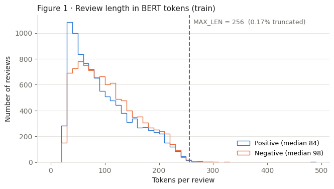
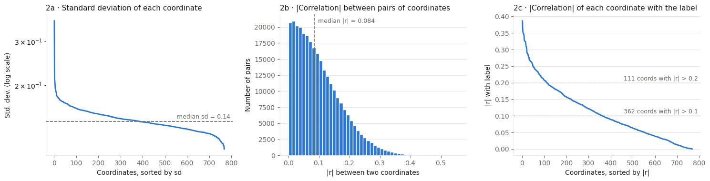
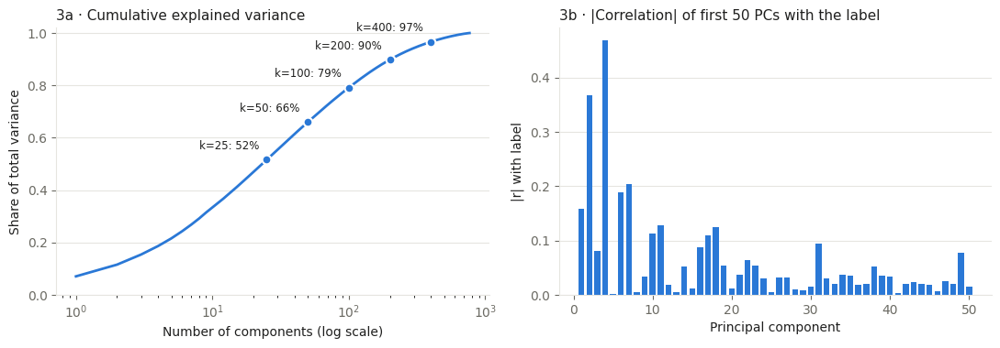
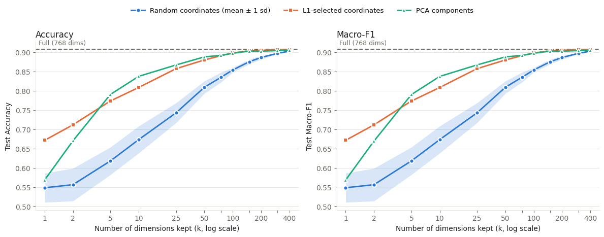

1Introduction
Background and motivation
Pretrained language models such as BERT produce dense, high-dimensional representations that work for many downstream tasks. BERT-base gives every input a 768-dimensional embedding, but that size is fixed by the architecture, not by what a particular prediction problem needs.
The embeddings are dense, yet the relationship between an embedding and a specific label may be sparse. If a small subset of coordinates keeps most of the predictive performance, that reveals task-specific redundancy and shrinks downstream storage and classifier size. We test this with three reduction strategies, each probing a different idea:
- Random coordinate selection checks whether predictive information is spread broadly enough that any subset works.
- Supervised (L1) selection checks whether finding task-relevant coordinates gives an advantage.
- PCA combines information across all dimensions instead of picking individual ones.
Related work
Two lines of earlier work motivate the project: neuron-level studies of what pretrained models encode, and classical statistical tools for selection and reduction.
Small subsets of neurons can predict morphology, syntax and semantics. Morphology is more localized than syntax, and information in BERT is more distributed than in XLNet.
Takeaway: how sparse the useful information is depends on the property and the model.
Separates general redundancy from task-specific redundancy. Layer and neuron level analyses show selected subsets can keep much of downstream performance.
Takeaway: high-dimensional representations can be highly redundant for a given task.
An L1 penalty drives many coefficients exactly to zero, so fitting the model also selects variables.
Our use: L1-regularized logistic regression picks which coordinates to keep.
PCA projects data onto the directions of maximum variance, without using any labels.
Our use: an unsupervised projection baseline that builds new components instead of keeping coordinates.
Where we fit: rather than studying linguistic properties across many layers, we ask a narrower question about pooled BERT embeddings and one sentiment task. At a fixed representation size, how much does the reduction strategy matter?
Research questions and scope
- How far can frozen BERT embeddings be reduced while staying close to the full 768-dimensional baseline?
- At matched sizes, how do supervised L1 selection, random selection and PCA compare?
- Under random selection, how sensitive is performance to which particular coordinates are kept?
Scope: this is an empirical comparison of established methods on one dataset and one embedding basis. It does not claim that transformer representations are sparse in general, and it does not make BERT inference itself any cheaper.
2Data and methodology
Every method shares the same pipeline. Only step 4 changes between methods, so differences in accuracy come from the representation, not the classifier.
- Sample reviewsBalanced train and test sets
- Frozen BERTMean-pooled 768-d embedding
- StandardizeUsing training mean and sd
- Reduce to kRandom, L1 or PCA
- ClassifyL2 logistic regression, C tuned by CV
- EvaluateHeld-out test accuracy and macro-F1
Dataset and preprocessing
We use Amazon Review Polarity (Zhang et al., 2015), a binary sentiment dataset of product reviews, loaded from fancyzhx/amazon_polarity on Hugging Face. Labels come from the star rating:
One and two star reviews are labeled negative (y = 0), four and five star reviews positive (y = 1). Three star reviews are not part of the dataset.
We keep the original train and test splits and build smaller samples in four steps:
- Draw candidate pools of 60,000 training and 30,000 test reviews without replacement (NumPy seed 0).
- Join each review's title and body into one text, adding a period after the title when needed, and normalize whitespace.
- Remove empty texts and exact duplicates, and drop any test review whose text also appears in the training pool.
- Draw balanced samples of 20,000 training and 10,000 test reviews (seed 0).
| Split | Reviews | Negative | Positive | Median words | 95th pct. words |
|---|---|---|---|---|---|
| Train | 20,000 | 10,000 | 10,000 | 70 | 161 |
| Test | 10,000 | 5,000 | 5,000 | 69 | 160 |
Table 1. The preprocessed samples. Word counts split on whitespace.
Frozen BERT representation
We encode reviews with bert-base-uncased, with every parameter frozen (evaluation mode, no gradients). Reviews are tokenized in batches of 64 and truncated at 256 tokens. The median review is about 90 tokens, and only 0.17% of training and 0.18% of test reviews are cut off. Each review's embedding is the average of its final-layer token vectors, skipping padding:
Here hit is the vector for token t and ait is 1 for real tokens and 0 for padding. This gives a 20,000 × 768 training matrix and a 10,000 × 768 test matrix, computed once and reused by every experiment.
Representation reduction
Each coordinate is first standardized with its training mean and standard deviation, and the same transform is applied to the test set. We then compare reduced sizes k = 1, 2, 5, 10, 25, 50, 75, 100, 150, 200, 300 and 400 against the full 768-dimensional baseline.
Random coordinates
Pick k of the 768 coordinates uniformly at random, without replacement.
Repeated 20 times per k (seed 42), with a separate classifier for each subset. This is the uninformed reference.
L1-selected coordinates
Fit L1-regularized logistic regression on the training set along a path of 33 penalty values.
For each k, take the strongest penalty that leaves at least k nonzero coefficients and keep the k with the largest absolute weights.
PCA components
Fit PCA on the standardized training embeddings (400 components) and use the first k component scores.
Each component mixes all 768 coordinates, so equal k means equal input size, not equal use of the original coordinates.
Classifier and tuning
Every representation goes through the same classifier: a StandardScaler followed by L2-regularized logistic regression. Its inverse penalty C is chosen from 11 log-spaced values between 10−4 and 10 by five-fold stratified cross-validation (seed 42), then the model is refit on the full training set and scored once on the held-out test set.
Coordinate selection and PCA are fitted before cross-validation, not inside each fold, so cross-validation scores may be optimistic. The test set is never used for fitting or tuning.
Metrics
We report test accuracy and macro-F1 (the average of the F1 scores for the two classes). Loss relative to the full representation is Mfull − Mmethod(k), in percentage points, so larger means worse. For random selection we report the mean and sample standard deviation across the 20 subsets. That spread reflects which coordinates were drawn on fixed data, not uncertainty over new data samples.
3Results
Exploratory data analysis
Before the experiments we looked at the reviews and at the embeddings themselves.



Classification performance
With all 768 dimensions the classifier reaches 90.80% test accuracy (macro-F1 0.9080). Accuracy generally rises with k for every method. Both L1 selection and PCA beat the average random subset at every size, and the gap is largest when k is small: at k = 5, L1 reaches 77.34% against 61.77% for random selection, a 15.57 point advantage. L1 is ahead of PCA at k = 1 and 2, PCA is ahead from k = 5 through 75, and L1 is slightly ahead from k = 100 on.

| Dimensions k | Random | L1 selection | PCA |
|---|
Table 3. Test accuracy (%). Random is mean ± sample sd across 20 subsets. Bold marks the best reduced method at each k.
Performance loss relative to the full representation
L1 selection keeps most of the baseline performance with far fewer coordinates. At k = 100 it keeps about 13% of the coordinates and loses 1.02 points. At k = 200 it keeps about 26% and is 0.34 points below the baseline. The gains then flatten: going from 100 to 200 coordinates adds 0.68 points, while going from 200 to 400 adds 0.19. The best tested L1 result is 90.66% at k = 300, 0.14 points below the baseline. PCA also closes in, reaching 90.51% with 400 components.
Variability across random subsets
Random selection improves from 54.81% at k = 1 to 90.25% at k = 400. Its standard deviation is 3.77 points at k = 1, peaks at 4.24 points at k = 2, and then falls to 0.19 points at k = 400. Small random subsets are a gamble on which coordinates you happen to draw; large ones give consistent results that approach the baseline, though they stay below L1 and PCA on average.
| k | Minimum | Maximum | Range |
|---|
Table 5. Lowest and highest test accuracy (%) among the 20 random subsets.
4Discussion
Interpretation of the findings
- A smaller representation can keep most of the performance, but the choice of coordinates matters. L1 selection beats the average random subset at every size, most of all when k is small, so supervised selection does find coordinates that carry more useful information than an arbitrary subset.
- Distributed signal and redundancy coexist. Hundreds of coordinates are individually correlated with sentiment, yet 200 selected ones nearly match the full baseline. That does not make the embeddings sparse or the other coordinates useless; their information may overlap with what is kept. The selected coordinates also depend on the embedding basis, so they are not a universal set of sentiment features.
- PCA is a competitive alternative. It outperforms L1 from k = 5 through 75, while L1 leads at k = 1 and 2 and is slightly ahead from k = 100 onward. PCA keeps variance rather than optimizing for prediction, as Figure 3 shows with PC4 beating PC1. The preferred method depends on k; these results do not establish a general winner across tasks.
Limitations and future work
- One balanced sample, one frozen BERT model, mean pooling and a linear classifier. Results may differ for other tasks, models or pooling. Exact-text deduplication does not rule out near-duplicate reviews.
- L1 selection and PCA are fitted on the whole training set before cross-validation, so validation scores may be optimistic. A cleaner version would refit standardization, selection and PCA inside each fold.
- The random-subset spread measures sensitivity to coordinate choice on fixed data, not uncertainty over new samples, and L1 and PCA stability across samples is not assessed. Close scores such as 90.66% and 90.80% should not be read as statistically equivalent.
- Reduction happens after BERT has already run. It shrinks stored features and the classifier, not transformer inference cost.
- Next steps: fix the cross-validation procedure, repeat the analysis on new data samples, add more tasks, and compare test predictions pairwise to measure how uncertain the gaps are.
5Conclusion
Frozen BERT embeddings can be shrunk a lot for Amazon Polarity sentiment classification. L1 selection keeps 200 of 768 coordinates and reaches 90.46% accuracy, against 90.80% with all of them; its best tested result is 90.66% at k = 300. Both L1 selection and PCA beat average random selection at every size tested. L1 leads PCA at k = 1 and 2, PCA leads from k = 5 through 75, and L1 is slightly ahead from k = 100 onward. The results support task-specific predictive redundancy and show that informed reduction preserves performance better than removing coordinates at random. They do not establish universal sparsity or an optimal dimension for transformer representations.
Reproduce it
The whole pipeline is one notebook, stat236_embedding.ipynb, built for Google Colab with a T4 GPU. Each step caches its output, so re-runs skip what already exists. Software: Python with PyTorch, Transformers, Datasets, NumPy, pandas and scikit-learn 1.6.1.
Keep
EMB_LIMIT = 200 and QUICK = True in Step 0, then Run all. Takes a few minutes.Set
EMB_LIMIT = None and QUICK = False. Takes 15 to 25 minutes. Sampling uses seed 0; random subsets, CV folds and PCA use seed 42.Per-run results go to
results/full/results_raw.csv and the summary to results/full/summary.csv.References
- J. Devlin, M.-W. Chang, K. Lee, K. Toutanova. BERT: Pre-training of deep bidirectional transformers for language understanding. NAACL-HLT, 2019. doi:10.18653/v1/N19-1423
- N. Durrani, H. Sajjad, F. Dalvi, Y. Belinkov. Analyzing individual neurons in pre-trained language models. EMNLP, 2020. doi:10.18653/v1/2020.emnlp-main.395
- F. Dalvi, H. Sajjad, N. Durrani, Y. Belinkov. Analyzing redundancy in pretrained transformer models. EMNLP, 2020. doi:10.18653/v1/2020.emnlp-main.398
- R. Tibshirani. Regression shrinkage and selection via the lasso. Journal of the Royal Statistical Society: Series B, 58(1), pp. 267 to 288, 1996. doi:10.1111/j.2517-6161.1996.tb02080.x
- I. T. Jolliffe, J. Cadima. Principal component analysis: a review and recent developments. Philosophical Transactions of the Royal Society A, 374:20150202, 2016. doi:10.1098/rsta.2015.0202
- X. Zhang, J. Zhao, Y. LeCun. Character-level convolutional networks for text classification. NeurIPS, vol. 28, 2015.